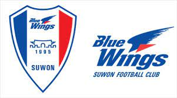
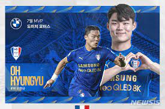

SuwonSamsung Bluewings

수원 삼성 블루윙즈는 1995년 12월 15일에 창단한 대한민국의 K리그1 소속 프로축구단이다.
연고지는 경기도 수원시이며, 홈 구장은 '빅버드'라 불리는 수원월드컵경기장이다.
- Name : 수원 삼성 블루윙즈
- Foundation year : 1995
- Hometown : Suwon
- Stadium : Suwon World Cup Stadium (Big Bird)
- KeyPlayer : Oh Hyun Gyu
